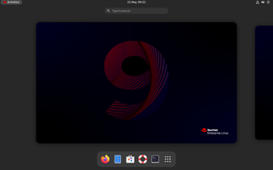

- O que é software?
- Sistema Operacionais
- Software de Programação
- Software de Sistema
- Software de Aplicação
- Software Livre
- Software Web ou Web App
- Software de Inteligência Artificial
O que é software?
Software é uma sequência de instruções escritas para serem interpretadas por um computador para executar tarefas específicas. Também pode ser definido como os programas, dados e instruções que comandam o funcionamento de um computador, smartphone, tablet e outros dispositivos eletrônicos. O software é o responsável por fazer a máquina compreender e executar os comandos do usuário. É classificado como a parte lógica e imaterial, cuja função é fornecer instruções para o hardware. O hardware é toda a parte física que constitui o dispositivo. A palavra inglesa software foi usada pela primeira vez em 1958 em um artigo escrito pelo cientista americano John Wilder Tukey. Foi também ele o responsável por introduzir o termo "bit" para designar "dígito binário".
Chrome, calculadora, Windows Media Player, Microsoft Word, AutoCAD, Adobe Photoshop.

Software de Sistema
Software de aplicativos são os programas utilizados nos dispositivos que permitem ao usuário executar uma série de tarefas nas mais diversas áreas de atividade
Exemplos: Chrome, calculadora, Windows Media Player, Microsoft Word, AutoCAD,
Software de Aplicação
O software de aplicação é criado, em regra, para executar tarefas específicas tal como o processamento de texto, reprodução de áudio. Ao contrário do software de sistema, estas tarefas não são indispensáveis ao normal funcionamento do computador e que só são executa- das a pedido do utilizador.
Word, Excel, Paint, Bloco de notas, calculadora
img src="imagens/sa.jpg"width=300/>Software Livre
Software Livre (Free Software) é um movimento político e filosófico que preza pela liberdade de acesso do código fonte de qualquer software pela comunidade de usuários. Segundo a Free Software Foundation (FSF), qualquer usuário tem o direito de executar, copiar, distribuir, estudar, mudar e melhorar o software.
Os mais conhecidos exemplos de softwares livres são: sistema operacional Linux; linguagens Java e PHP; banco de dados MySQL; programa de escritório LibreOffice (alternativa gratuita do pacote Office da Microsoft); e-mail gratuito Thunderbird
img src="imagens/sl.jpeg"width=300/>Software Web ou Web App
as Web Apps são aplicações de software executadas num navegador de Web e que podem ser acedidos pela Internet. São desenvolvidas por programadores de aplicações e podem ser usados em qualquer dispositivo com um navegador de web e acesso à Internet.
Twitter. Apesar de poder encontrar o app do twitter nas lojas de aplicativos, a rede social pode ser facilmente acessada pelo navegador do seu dispositivo. ... Pinterest. O Pinterest é uma rede social de compartilhamento de imagens. ... YouTube. ... Uber.
Software de Inteligência Artificial
Os softwares de inteligência artificial, ou software IA, imitam o comportamento humano e os padrões de aprendizado. Um programa de inteligência artificial pode ser utilizado em várias áreas de negócios, desde atendimento ao cliente e vendas (na forma de chatbots) até análise de dados e automação de tarefas de TI.
assistentes de voz como Alexa e Siri, algoritmos de redes sociais, ferramentas de reconhecimento facial como Face ID, entre outros.

wndows1.0
Windows 1.0 foi uma interface gráfica de usuário (GUI) entre o sistema operacional Microsoft DOS e o computador, é a primeiro versão da família Windows
windows2.0
Windows 2.0 foi uma interface gráfica de usuário entre o sistema operacional Microsoft DOS e o computador, é a segunda versão da família Windows desenvolvido pela empresa norte-americana Microsoft lançado em 9 de dezembro de 1987, sucessor da versao Windows
windows3.0
Windows3.0 Traduzido do inglês-O Windows 3.0 é o terceiro grande lançamento do Microsoft Windows, lançado em 1990. Ele apresenta uma nova interface gráfica de usuário onde os aplicativos são representados como ícones clicáveis, em oposição à lista de nomes de arquivos vista em seus antecessores.

windows4.0
Windows NT 4.0 é a quarta versão do sistema operacional Microsoft Windows NT, lançado em 1996. É um sistema Windows de 32 bits disponível para estações de trabalho e servidores com interface gráfica semelhante ao Windows 95

windows.5.0
O Windows CE 5.0 é o sucessor do Windows CE 4.2, é a terceira versão da família Windows CE NET. Foi lançado em 9 de julho de 2004. Como seus antecessores o Windows CE 5.0 é comercializado para o mercado de dispositivos embarcados e vendedores independentes de dispositivos.
windows6.0
O Windows Embedded CE 6.0 é o principal lançamento da sexta versão do sistema operacional Windows Embedded voltado para empresa de ferramentas específicas, tais como controladores industriais e dispositivos eletrônicos de consumo como câmeras digitais.
windows7.0
Windows 7 é uma versão do Microsoft Windows, uma série de sistemas operativos produzidos pela Microsoft para uso em computadores pessoais, incluindo computadores domésticos e empresariais, laptops, tablets e PCs de centros de mídia, entre outros.
windows8.0
O Windows 8 é uma versão do Microsoft Windows, uma série de sistemas operacionais desenvolvidos pela Microsoft para computadores pessoais, laptops e tablets
windows9.0
O Windows 9 é o novo sistema operacional da Microsoft para desktops e tablets. Também conhecido como Threshold e esperado como Windows 9, o SO vem para
windows10.0
Windows 10 é uma versão do Microsoft Windows, uma série de sistemas operativos comercializados pela Microsoft. A sua primeira versão de testes foi lançada em 1 de outubro de 2014 e o lançamento oficial foi em 29 de julho de 2015. Foi o sucessor do Windows
windows11.0
O Windows 11 é a atual e principal versão da família de sistemas operacionais Windows NT, anunciada em 24 de junho de 2021, e desenvolvida pela Microsoft. Com o lançamento em 5 de outubro de 2021, é o sucessor do Windows 10, lançado seis anos antes.
Debian
Debian ( /ˈdɛbiən/),[3] anteriormente chamado Debian GNU/Linux e hoje apenas Debian,[4] é um sistema operacional composto inteiramente de software livre e mantido oficialmente pelo Projeto Debian. O projeto recebe, ainda, apoio de outros indivíduos e organizações de todo o mundo. O grupo distribui núcleos Unix-like, como o Debian GNU/kFreeBSD e o Debian GNU/Hurd. O Debian é especialmente conhecido pelo seu sistema de gestão de pacotes, chamado APT, que permite atualizações relativamente fáceis a partir de versões anteriores, a instalação quase sem esforço de novos pacotes e a remoção limpa de pacotes antigos. O nome Debian vem dos nomes dos seus fundadores, Ian Murdock e sua esposa Debra.[5] O projeto Debian é mantido por meio de doações à organização sem fins lucrativos Software in the Public Interest (SPI).

Ubuntu
Ubuntu é um sistema operacional(pt-BR) ou sistema operativo(pt-PT?) de código aberto, construído a partir do núcleo Linux, baseado no Debian e utiliza GNOME como ambiente de desktop de sua mais recente versão com suporte de longo prazo (LTS). Esta distribuição Linux é desenvolvida pela Canonical Ltd.[7]
Kubuntu
Kubuntu é uma variação oficial do sistema operacional Ubuntu que usa o ambiente de desktop KDE Plasma. Usa os mesmos sistemas subjacentes, os mesmos repositórios e é lançado regularmente na mesma programação do Ubuntu.
Linux Mint
Linux Mint é uma distribuição Linux irlandesa. Possui duas versões: uma baseada em Ubuntu (com o qual é totalmente compatível e partilha os mesmos repositórios) e outra versão baseada em Debian. Suporta muitos idiomas, incluindo a língua portuguesa, e utiliza o Cinnamon como seu principal ambiente de desktop.
elementary OS
elementary OS é uma distribuição de Linux baseada nos lançamentos do Ubuntu com suporte de longo prazo (LTS) e utiliza o ambiente de desktop Pantheon, que usa a linguagem de programação Vala.[2][3] A sua interface de usuário visa ser intuitiva para novos usuários sem utilizar muitos recursos.[4
Fedora Lenux
Fedora (conhecido como Fedora Core antes da versão 7) é um sistema operacional(pt-BR) ou sistema operativo(pt-PT?) Linux. O sistema operacional Fedora Linux é software livre e de código aberto, e os programas disponíveis dentro de seu repositório de programas também são programas livres que aderem a uma licença livre.
Red Hat Enterprise Linux
O Red Hat Enterprise Linux (RHEL) é um sistema operacional(pt-BR) ou sistema operativo(pt-PT?)GNU/Linux com foco para o mercado corporativo. É desenvolvido pela empresa Red Hat.
CentOS
O CentOS, abreviação de Community ENTerprise Operating System, é uma distribuição Linux de classe corporativa derivada de códigos fonte gratuitamente distribuídos pela Red Hat Enterprise Linux e mantida pelo CentOS Project

openSUSE
openSUSE é um sistema operacional baseado no núcleo Linux, desenvolvido pela comunidade openSUSE de forma gratuita. Após adquirir o SUSE Linux em janeiro de 2004,[1] a Novell, uma empresa norte-americana que na década de 1980 ficou famosa por seu sistema operacional de rede (Netware), após o sucesso lançou o SUSE Linux Professional como um projeto 100% código livre, envolvendo a comunidade no processo de desenvolvimento.
Arch Linux
Arch Linux, ou Arch (pronúncia em inglês: [ɑːrtʃ]),[3] é uma distribuição Linux para computadores com arquitetura x86-64. Desenvolvido inicialmente pelo canadense Judd Vinet, esse sistema operacional se apresenta de maneira diferente de outros, como Windows e MacOS. Além de ser composto predominantemente por software livre e de código aberto, ele envolve contribuições da comunidade.

Manjaro Linux
O Manjaro é uma distribuição Linux livre e de código aberto baseada no sistema operacional Arch Linux. O Manjaro se concentra na facilidade de uso e acessibilidade, e o próprio sistema foi projetado para funcionar totalmente "direto da caixa" com sua variedade de softwares pré instalados. Ele apresenta um modelo de atualização de lançamento contínuo e usa o Pacman como seu gerenciador de pacotes.[5] O Manjaro é desenvolvido principalmente na Áustria, na França e na Alemanha
Gentoo
Gentoo Linux (pronuncia-se "jentú"[2]) é uma metadistribuição baseada no sistema gerenciador de pacotes portage. A nomenclatura usada no desenvolvimento do sistema e seus produtos é inspirada na espécie de pinguim Gentoo. Seu gerenciamento de pacotes é projetado para ser modular, portátil, fácil de manter, flexível e otimizado para a máquina usuária. Diferentemente da maioria das distribuições de software, normalmente os pacotes são compilados a partir do código fonte, mantendo a tradição dos ports[3] nos sistemas BSD, embora, por conveniência, alguns pacotes grandes sejam disponibilizados também como binários pré-compilados para várias arquiteturas

Chrome OS
Chrome OS é um sistema operacional desenvolvido pelo Google, lançado em 2010, baseado no núcleo do Linux e usa o navegador de internet Google Chrome como interface de usuário, suportando primariamente aplicativos da